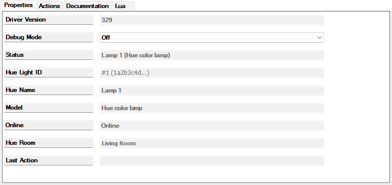

A Hue Light is one Philips Hue light (a bulb, strip or lamp as the Hue app lists it) shown as an ordinary Control4 light: on, off, dimming, and colour or colour temperature when the light supports them. It is created by the Hue Bridge device's Add Light or Import All New Lights action, normally never added by hand, and it is driven entirely by the bridge: the bridge tells it what its light can do and what state it is in, and passes your commands on to the light. Changes made in the Hue app or with Hue switches show on this device within a second or two, because the bridge listens to the Hue bridge's event feed.
The same device can stand for a whole Hue zone or room when the bridge's Add Zone Light action created it: a zone light, named after the zone (Bedside Lights), or a room light, named after the room with Lights added (Master Bedroom Lights). Its one tile switches, dims and colours every lamp of the zone or room at once, with a single request to the bridge, and shows what they are doing. Everything on this page applies to it; the differences are noted where they occur.
To Composer this is an ordinary dimmer: programming, keypad buttons, Navigators and Advanced Lighting Scenes use it like any other light. A tap on its tile and "Turn On" in programming mean 100 %, not the level the light had before or the power-on level set in the Hue app, as long as the Default On Brightness is left at 100 ("Keypad settings" below says what is known about changing it). Its on, off and level-changed events fire for changes made in the Hue app, by a Hue dimmer switch or by a Hue automation too. A whole-room command reaches Hue lights at ten a second, so a room with many of them finishes over a few seconds. While the Hue bridge is unreachable, the tile shows the level you asked for a second after the command's ramp time although the light did nothing; the command is retried for up to 30 seconds and delivered if the bridge is back by then, otherwise dropped, and the tile is corrected when the bridge is back.
On a keypad, or on a Control4 Switch V2 or Essential Switch set to Use as 2 Button Keypad, it behaves like a Control4 dimmer once the buttons are bound to its Top Button Link and Bottom Button Link in Connections (listed under its Control Outputs; a single button goes to Toggle Button Link). A tap on the top button turns it on to 100 % over 250 ms, a tap on the bottom button turns it off over 250 ms, and a toggle button switches it the other way. A button held for longer than 0.4 seconds makes Hue brighten the light (top, or toggle while the light is off) or dim it (bottom, or toggle while it is on), the full range in 5 seconds (a hold that starts in the middle of the range currently moves faster than that, issue #232), until the button is let go, as Hue's own dimmer switch does. Held while the light is off, the top or toggle button turns it on at 1 % and brightens from there (let go within about a second of pressing and it stays at 1 %); the bottom button does nothing. A tap that comes within a second after letting go of a hold on the same button is ignored, because some keypads send one. The keypad's LEDs follow the light's state, including changes made in the Hue app: a top or toggle button is lit blue while the light is on, a bottom button while it is off. The bridge's manual, chapter 11, has the setup steps; "Keypad settings" below says how to change the 100 %, the 250 ms, the 5 seconds and the blue.
A zone light or room light is on while any lamp of its zone or room is lit, and its level is the average brightness of the lit lamps. A tap, the top button and "Turn On" set every lamp to the level a single light would get (100 % while the Default On Brightness is 100); the slider, or a level from programming or a lighting scene, sets every lamp to that level, so the differences between the lamps are levelled out; a keypad hold is Hue's own dimming of the whole zone, which keeps those differences, as Hue's dimmer switch does. Colour and colour temperature go to all the lamps of the zone or room in one request; a lamp that cannot show them should ignore them (not seen on the house system as this is written, where every lamp can show both). The tile has a colour wheel if any lamp has colour and a temperature control if any has colour temperature, and it shows the colour of the first lit lamp showing a colour, else the colour temperature of the first lit lamp showing one, because Hue reports no colour for a zone as a whole. Hue takes about one command a second for a zone or room (ten for single lights), so after a first burst of three a fast slider drag is sent as one request a second while the tile moves smoothly, and the lamps end where the slider ends; a hold's start and stop go out at once. Turning a zone or room light off also ends any Hue scene playing there, so a Hue Scene device of the same zone or room goes off with it (the bridge's manual, 9.4; seen on the house system on 2026-10-25 with a room light).
The 100 %, the 250 ms, the 5 seconds and the blue LEDs above are the defaults of the settings a Control4 dimmer normally lists on its Properties page, and Composer lists them for this device too, on its Properties tab above the driver's own rows (Advanced Properties):
Composer shows the rates in seconds (5.000) and the values the device is using. Type a new level or rate and press Enter: Composer sends it then, and the next button press uses it. The device takes rates from 0 to 86 400 000 ms (24 hours). A value outside these ranges is refused: the device keeps the value it had and reports it back, so Composer shows that value again (a Default On Brightness of 0 would make the top button turn the light off). Composer also lists a colour on mode for this device, which the driver does not use.
The driver uses the Default On Brightness and the click rates for keypad taps only: Control4's ON command, and TOGGLE while the light is off, turn it on at 100 % at once. Whether a tap on the tile and "Turn On" in programming follow a changed Default On Brightness depends on which command Control4 sends for them, and had not been checked on the house system as this is written. A zone or room light has the same settings. Showing them changed what this device type can do in Control4, its capabilities, so after the update that brought them they appear only once the controller has been rebooted from System Manager, as after any such update (the bridge's manual, chapter 3); until then the defaults apply.
The device fills in the rows below itself, most of them from what the bridge tells it; the only one you change is Debug Mode, and only when asked. The keypad settings are described above.

The Properties page of a Hue Light for the lamp Lamp 1.

The same page for a zone light, the Hue zone Accent: Status Hue zone Accent (2 lights) and Hue Room Accent (zone).
| Property | What it shows |
|---|---|
| Driver Version | The build number of the installed driver, for example 116. It matches the bridge's after an update; after an update during which Composer asked Restart Director?, only once the controller has been rebooted from System Manager (the bridge's manual, chapter 3). |
| Debug Mode | Off (default) or On. On writes many more lines to this device's Lua output (the lower part of its Lua tab); developer use only. Remember that a changed property reaches the driver only when you click the row's Set button. |
| Status | In normal use the Hue name and the light's model, for example Left Bedside Light (Hue color lamp) (Porch (unknown model) until the model is known). A zone light reads Hue zone Bedside Lights (2 lights), a room light Hue room Master Bedroom (9 lights). Other texts are explained below. |
| Hue Light ID | #12 (1a2b3c4d…): the light's number on the bridge (the same number the bridge's lists show after the name) and the start of its long identifier. Blank until the bridge has linked the device; the long identifier alone for a moment when the device remembers its light but has not heard its number yet. For a zone or room light, zone #2 (5e6f7a8b…) or room #5 (…): the group's number on the bridge and the start of its identifier. |
| Hue Name | The light's name in the Hue app, as the bridge passes names on: without control characters or spaces at either end, and at most 100 characters long. The device's name in Composer starts out the same and is then yours to change. For a zone or room light, the zone's or room's name; a room light's Composer name, Master Bedroom Lights, is not counted as a difference. |
| Model | The light's model as Hue reports it (its product name, else its model number), for example Hue color lamp or Hue white lamp, passed on as the Hue Name is. For a zone or room light, Hue zone (2 lights) or Hue room (9 lights); the count follows the lamps in it. |
| Online | Online when the bridge reports the light connected; Offline when it reports the light unreachable (no power, for example), or the device is not bound, gone or forgotten; blank while the bridge has not said either way yet (for ever, harmlessly, for a light whose Hue device reports no Zigbee connection). While Offline, and while the device waits for the bridge, the tile is disabled on Navigators. A zone light is Offline while its zone holds no lights. |
| Hue Room | The Hue room the light belongs to, for example Master Bedroom; blank for a light in no Hue room. It follows a move in the Hue app within seconds; moving the device to another Control4 room does not change it. For a zone light, the zone's own label, Bedside Lights (zone); for a room light, the room's name. |
| Last Action | The result of the last click on this device's Actions tab, or Forgotten by the bridge after the bridge released it. For a forgotten zone light it carries the instruction, Delete this device in Composer, or bind it again and use Link Devices, because that device's Status is shorter. |

The Actions tab: Adopt Hue Name above Forget This Light.
| Action | What it does |
|---|---|
| Adopt Hue Name | Renames this device in Composer to its Hue name. Last Action reads Renamed device 1081 to Desk Lamp; while the bridge has not linked the device yet it reads Not renamed: no Hue name known yet (the bridge has not configured this light). Names are never changed without this click (or the bridge's Adopt Hue Names); the driver never renames anything in Hue. A room light is renamed to the room's name with Lights added. |
| Forget This Light | Asks the bridge to release this device from its Hue light. Last Action reads Asked the bridge to forget this light; its answer sets Status (Asked the bridge to forget this zone light; its answer sets Status on a zone light, … this room light; … on a room light), and a moment later Status reads the forgotten text below. The device stays in the project for you to delete; the Hue light becomes available again under the bridge's Add Light. When no bridge is connected it reads Not sent: not bound to a Hue Bridge. On a zone or room light it works the same; the zone or room is then listed under the bridge's Add Zone Light again. |
| Status | Meaning | What to do |
|---|---|---|
Left Bedside Light (Hue color lamp) | Linked and working. | Nothing. |
Hue zone Bedside Lights (2 lights), Hue room Master Bedroom (9 lights) | A zone light or room light, linked and working; the count is the lamps in the zone or room. | Nothing. |
Not bound to a Hue Bridge | The device has no connection to a Hue Bridge: it was added by hand, its connection was removed, or the bridge device was deleted and re-added. In the first minute after a Director restart or a controller reboot it can also show while the connection is in place. | Right after a restart or reboot, wait a minute: the device looks for its connection again after 5, 15, 30 and 60 seconds and the text corrects itself. Otherwise open Composer's Connections view (the button below the System Design tree), select this device and connect its Hue Bridge input to the bridge's Hue Lights output by dragging the bridge from the lower pane onto that row. A device that remembers which Hue light it was is linked by the bridge the moment it is connected, no click needed. A device added by hand then reads Bound; waiting for the bridge: see the next row. |
Bound; waiting for the bridge | Connected to the bridge, but the bridge has not linked it to a Hue light yet. | Wait a few seconds if the bridge is starting; otherwise make sure the device's Composer name is exactly the Hue light's name and click Link Devices on the bridge, which matches it by that name. |
Gone from the Hue bridge since 2026-10-22 09:15; re-link or Forget | The Hue light this device stood for was deleted or replaced on the Hue side. The device, its room and its programming are kept; the tile is disabled. | On the bridge, Re-link Device To Light to point the device at the replacement light; or Forget Light (or this device's Forget This Light) and delete the device. |
Hue zone Bedside Lights has no lights; nothing to control | Every lamp was removed from the zone (or room) in the Hue app. The device is Offline and drops commands; it is not counted as missing, because the zone still exists. | Put a lamp in the zone in the Hue app and the device is Online again by itself; or leave it. |
Zone deleted in Hue since 2026-10-24; re-link or Forget (a room light: Room deleted in Hue since …) | The zone or room this device stood for was deleted in the Hue app. The device, its room and its programming are kept; the tile is disabled. | On the bridge, Re-link Zone Light to point the device at another zone or room; or Forget Light (or this device's Forget This Light) and delete the device. |
Forgotten by the bridge (was Hue light Desk Lamp #12). Delete this device in Composer, or bind it again and use Link Devices | You or the bridge released this device. Its connection to the bridge is gone and its tile is disabled. | Delete the device in Composer; or, to take it back, connect it to the bridge in Connections as above: the bridge adopts it on the spot, and Link Devices then only confirms with All N bound devices are registered. |
Forgotten by the bridge (was Hue zone Bedside Lights) | The zone light was released; the instruction (Delete this device in Composer, or bind it again and use Link Devices) is in Last Action. | As the row above; the zone lights' part of the Link Devices result then reads Zone lights: All N bound zone light devices are registered. |
When this device cannot act (not bound, waiting, gone or forgotten, or a zone light whose zone has no lights) it drops the commands it receives, and Status says why. Colour and colour temperature controls appear on Navigators only when the light has them; brightness is shown in whole percents, never 0 % while the light is on, and a colour set while the light is off is applied when Control4 next turns it on (a turn-on from elsewhere, the Hue app for example, drops it).
In the System Design tree this device shows a small Hue dimmer switch as its icon if it was created by a build that has the Hue icons; one created by an earlier build keeps Control4's standard bulb. In a room's List View it always shows the standard light icon.
Hue Bridge, Hue Light and Hue Scene drivers for Control4. Copyright 2026 Cory Fair; licensed under the Apache License, Version 2.0 (the LICENSE and NOTICE files that come with the drivers). Philips Hue and Hue are trademarks of Signify Holding B.V.; Control4 and Composer are trademarks of Snap One, LLC. This project is not affiliated with, endorsed by or supported by Signify or Snap One.